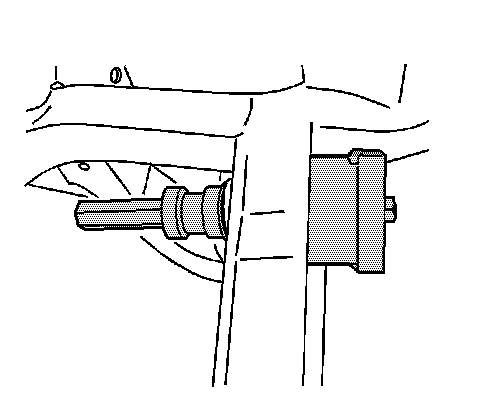

Suspension: Service and Repair
Differential Mount Replacement
Tools Required
* J 21474 Control Arm Bushing Installer
* J 9519-E Lower Ball Joint Remover/Installer
Removal Procedure
1. Raise and support the vehicle. Refer to Lifting and Jacking the Vehicle (Service and Repair) .
2. Removal the differential from the vehicle. Refer to Differential Replacement (Differential Replacement) .

Important: The differential bushing is not fully seated in the bore and has voids that are in the horizontal position. Note and mark the position of the bushings prior to removal and press the new bushings in to the same position.
3. Install the J 9519-E and J 21474 to the differential bushing.
4. Using the J 9519-E and J 21474 , remove the differential bushing from the vehicle.
Installation Procedure
1. Install the J 9519-E and J 21474 to the differential bushing.
Important: The differential bushing is not fully seated in the bore and has voids that are in the horizontal position. Note and mark the position of the bushings prior to removal and press the new bushings in to the same position.
2. Using the J 9519-E and J 21474 , install the differential bushing to the vehicle.
3. Install the differential to the vehicle. Refer to Differential Replacement (Differential Replacement) .
4. Lower the vehicle.